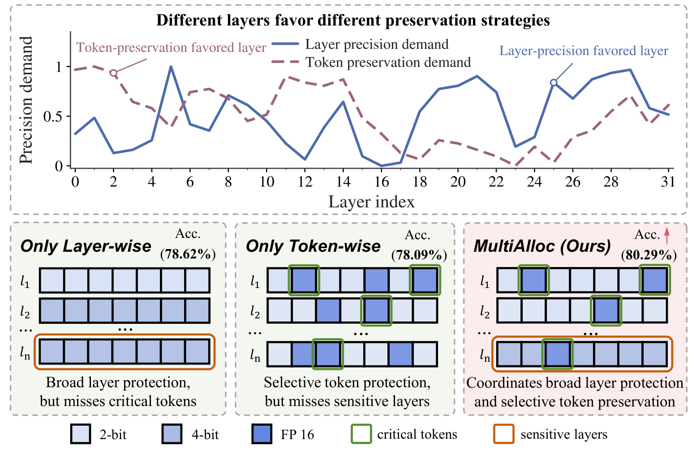
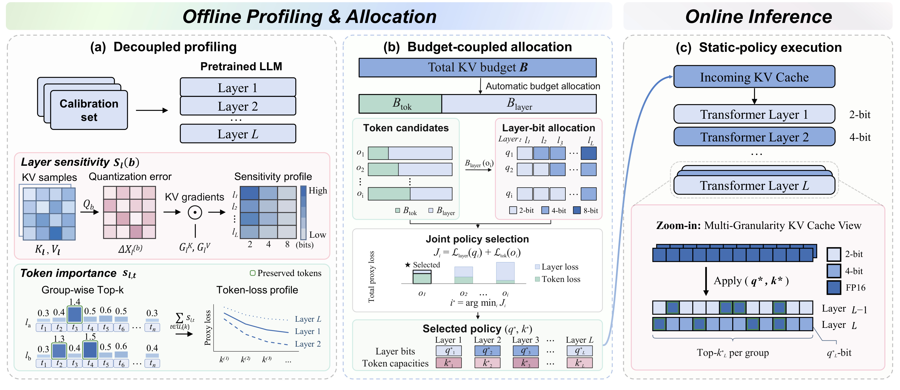
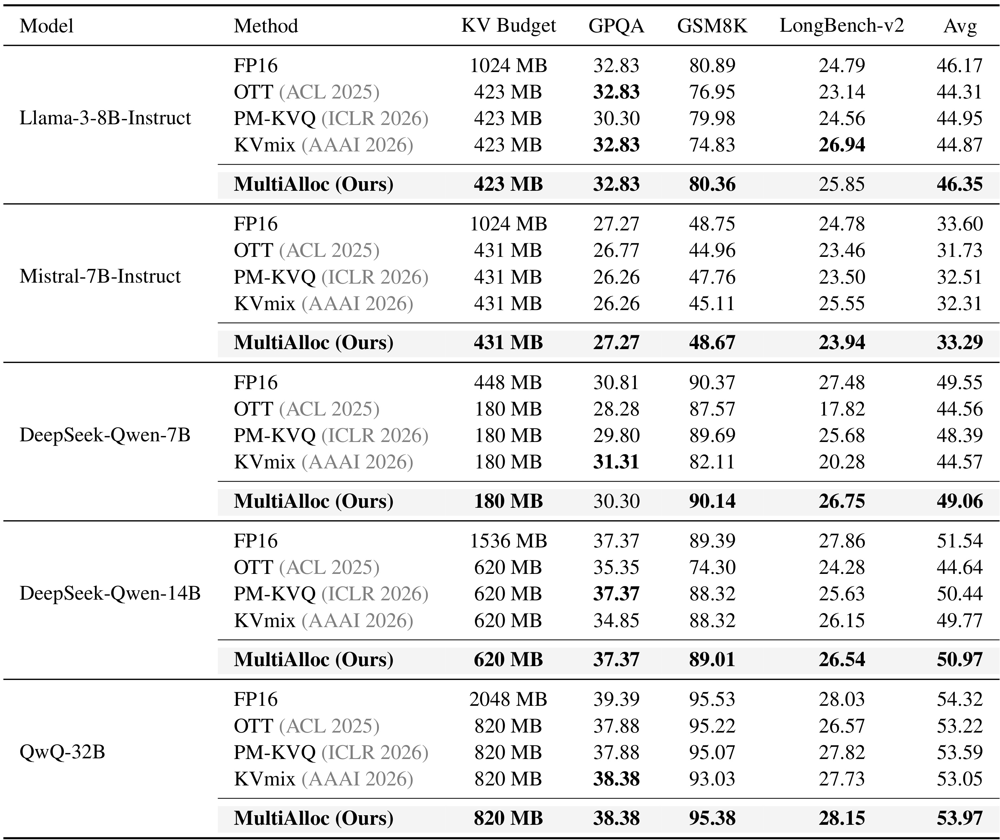
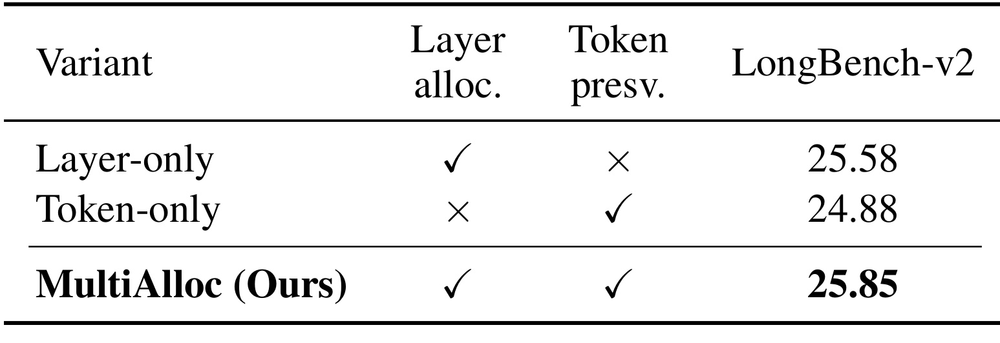
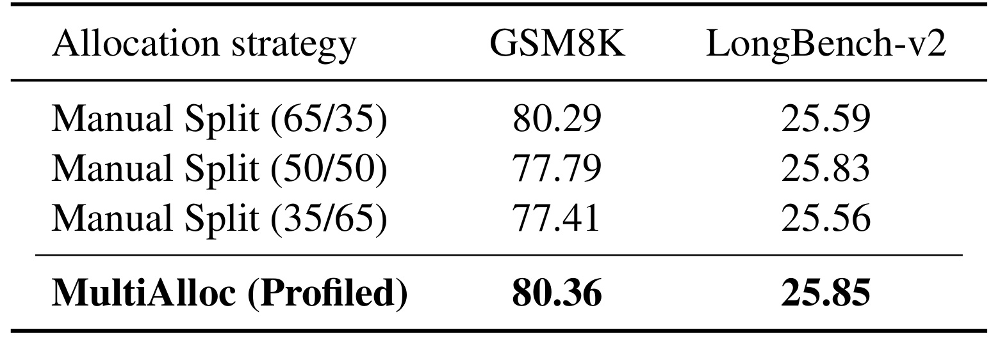
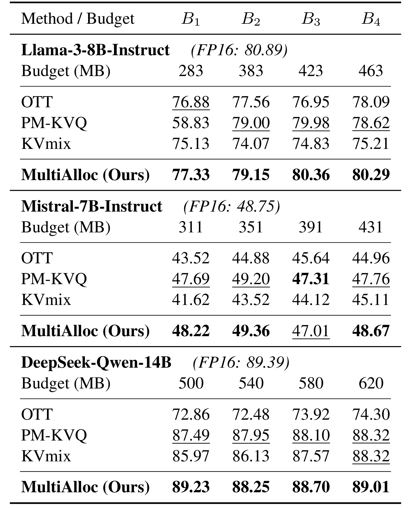
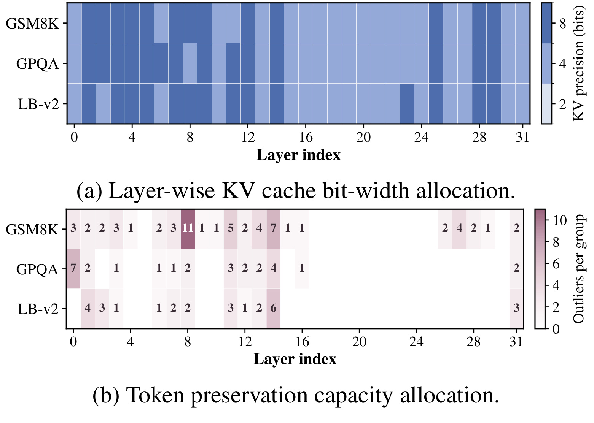
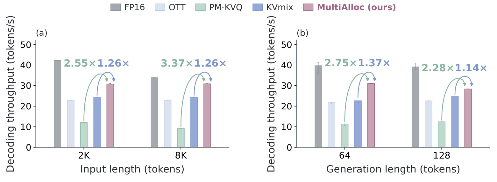

MultiAlloc：固定 KV 预算下的层精度与 token 保留联合分配
- 论文：MultiAlloc: Budget-Aware Precision Allocation for KV Cache Quantization
- 作者：Yangchengyu Zhou、Zhiping Wu、Runchang Jiang、Dongdong Ren、Youfang Han、Wei Zhao、Dongqi Cai、Wenbin Li。
- 机构：南京大学；合作机构：香港科技大学、Geely、Goertek。
- 首次公开：2026-10-13 16:10:45 UTC（北京时间 2026-10-14 00:10:45）；本笔记日期：2026-10-15。
- 论文入口：arXiv:2610.18642。
- 代码：官方 MultiAlloc 仓库，已核验存在实现、配置和实验脚本；本轮未运行实验。
- 阅读范围：20 页全文及附录 A–F。以下数字来自作者实验，解释和工程迁移判断明确限定在原文范围内。
1. 背景和问题
长上下文推理首先改变的是缓存规模。自回归模型在每一层保留历史位置的键和值，新查询通过这些缓存访问过去信息，因此缓存随层数、序列长度和表示维度线性增长。权重在一次推理过程中基本固定，缓存却随着提示词和输出长度持续扩张。把缓存统一改为低位宽能够降低存储压力，但它同时改变注意力的匹配和聚合过程：键的误差影响查询与历史位置的匹配，值的误差影响被取回的信息。压缩后的表现依赖具体任务、模型和预算，不能只看压缩倍数。对于数学推理或跨文档问答，少量位置的偏移可能改变最后答案；对于模型的某些敏感层，很多位置上的小误差也可能产生累计影响。
实际部署的关键是如何在固定 KV 缓存内存预算下，在不同粒度的精度保留策略之间分配有限的量化资源。这句话紧贴论文摘要中的问题陈述。作者关心的不是寻找一个普遍最优的低比特量化器，而是当预算已经给定时，额外字节应该用来提升哪些层的基础精度，或者保护哪些层的一部分特殊 token。两种动作的覆盖范围不同：提高某层位宽会改善该层广泛存在的表示误差，保留少量高精度 token 则针对组内尖锐的分布差异。它们可能都有效，但把两种方案分别优化后简单叠加，未必满足同一预算，也未必是最合适的资源分配。
论文把已有工作分为几条相关路线。KIVI 利用键和值的不同分布设置不同量化粒度；OTT 等方法识别离群 token 并给予更多精度；PM-KVQ 等方法根据层级敏感度安排混合精度。KVmix 已经涉及层与 token 两个粒度，因此 MultiAlloc 的新意不能写成“首次同时考虑层和 token”。作者强调的区别是，通过离线剖析将两类精度需求显式转化为共享预算中的候选选择。与缓存淘汰、缓存分页和卸载相比，这项工作主要改变缓存的表示精度。组内未保留高精度的 token 仍以低位宽形式存在，所以“未保留重要性”并不意味着这些 token 被删除，也不等于上下文截断。

Figure 1 上方两条曲线表达两类需求并不总在相同层达到峰值：某层可能更需要提升全部 token 的基础位宽，另一层可能更适合把预算集中于少数位置。下方三个示意图给出层保护、token 保护和联合保护的覆盖区别，绿色边框表示重要 token，橙色边框表示敏感层，填色表示不同精度。它的作用是帮助理解资源用途，而不是单凭示意图就证明联合方法永远最好。图中的 78.62%、78.09% 和 80.29% 应与具体实验配置一起读，不能代替后文完整主表，也不能与另一预算下的 80.36% 随意混用。特别是这里的高精度保护仍保留了原有缓存结构，没有把历史 token 从注意力输入中清除；它讨论的是数据表示质量而非保留上下文长度。两条需求曲线属于剖析侧的表示，纵轴不是下游准确率；其峰值错位只提供互补动机，真正资源分配还要把提高位宽的字节成本和保护位置的额外成本一起纳入。若某层两类信号都强，预算约束会迫使算法在更广覆盖与少量高精度位置之间选择，而非同时无限增加。
这个问题适合长期运行的固定模型服务：目标工作负载相对稳定，部署前可以使用代表性样本建立剖析表，然后把确定的策略加载到推理框架中。它并不要求修改预训练权重，也不需要对每次请求重新搜索最优位宽。不过“静态”需要精确定义。固定的是每层位宽和每组高精度容量，以及评分与选择规则；当前输入中哪几个 token 占用这些容量，仍然取决于输入的键向量。若把静态部署解释为完全无需在线评分和 token 选择，就会把论文的效率边界说错。另一方面，离线剖析包含一次前向与反向计算，不能因为推理时没有梯度就把整个方法称为无需梯度的分配器。
阅读时还应区分两个层面的适应性。论文的策略随模型、任务和目标预算重新生成，这是部署配置层面的适应；单个策略加载后不在请求内反复修改预算拆分，这是运行层面的固定。附录明确每个模型和数据集配对分别校准，并没有展示一个统一策略跨所有任务完全通用。工程上这意味着需要维护校准数据、目标上下文与预算版本之间的映射。收益可能来自更合理的分配，但校准分布变化、损失代理失真、候选范围过窄或缓存成本估计不准确，都可能降低这种收益。后文的公式和实验正是围绕这些条件展开，而不是把“离线自动化”本身视为效果保证。
从评估组织方式看，匹配缓存预算比固定全部方法的名义位宽更合理。一个方案把更多字节用于高精度位置，另一个把字节用于更高基础位宽，如果只宣布它们都使用低位宽就做比较，隐藏成本会产生误导。本文的预算耦合正是把这种隐藏的资源竞争显式化；不过与真实系统的对应还取决于统一记账是否覆盖实际存储，这一点需要和后文的部署测量一起判断。
2. 方法
2.1 精度需求的解耦剖析
MultiAlloc 的输入是预训练模型、目标任务的校准集、候选位宽和 KV 预算，输出是各层的基础位宽与组内高精度容量。论文正文先提出约束优化目标，再依次建立层级和 token 级剖析信号。设有若干层，每层的缓存都可以在候选低位宽中选择，并为组内部分 token 保留高精度。原文式（5）的形式为：
符号解释：$\mathbf q$ 是逐层位宽向量，$\mathbf k$ 是逐层组内保留容量向量，$B$ 是 KV 缓存预算，$M$ 为策略对应的缓存成本，$\mathcal L$ 为压缩引起的退化。这个表达只是总体问题定义，不意味着实际计算了每个候选的真实任务准确率。直接枚举所有层的位宽与容量组合会产生庞大的空间，因此方法用可复用的离线信号估计相对优劣，先剖析再分配。均匀仿射量化通过缩放、零点、舍入和截断把浮点表示映射到低位整数，重构误差既来自舍入，也来自离群值的处理；同样位宽在不同层可能产生不同误差影响。

Figure 2 的左侧同时收集两类信息，但它们的计算目的不同。层分支使用量化扰动和缓存梯度，估计改变基础位宽对剖析损失的潜在影响；token 分支使用激活幅度形成组内重要性排序，并评估不同容量留下多少重要性没有被高精度覆盖。中间的分配器对每个 token 候选先算占用，剩余字节再交给层位宽求解器，因此 token 选择和层选择通过内存约束相互影响，而不是两条独立结果拼接。每个候选得到一对完整策略及代理分数，最后挑选分数最低的可行方案。右侧部署图表示加载这对策略后，缓存中同时存在低精度基础表示和高精度稀疏位置。需要留意图里从输入缓存到组内选择的箭头：固定容量没有固定 token 身份，输入变化仍会改变被保护的位置。这张框架图也说明了离线成本的复用方式，一次反向得到的梯度可以服务多个位宽候选，不需要为每个候选重做完整梯度计算。与在线搜索相比，这节约的是分配求解过程；真正的量化、选择和缓存维护依然是推理工作的一部分。左侧两种代理也没有互相替代：梯度分支估计量化误差作用于剖析目标的影响，激活分支估计额外保护能覆盖的幅度质量。中间把它们相加只是为候选排序提供近似指标，并非注意力输出的一条严格误差分解。右侧只读取已经选定的策略，不需要再次访问校准样本；校准统计是否仍代表当前流量，属于部署前后需要另行检查的条件。 层级估计首先在浮点 KV 上模拟各候选位宽的误差。对第 $l$ 层与位宽 $b$，原文式（6）及其一阶近似为：
符号解释：$Q_b$ 表示量化并形成近似表示的操作，$K_l,V_l$ 是该层缓存，$G_l^K,G_l^V$ 是校准目标对缓存的梯度，内积给出局部扰动对损失的带符号贡献。附录 B 指明剖析损失是校准集上的下一 token 负对数似然。算法并不更新模型参数，而是通过一次前向反向收集缓存及梯度，然后复用这些中间量计算各候选的扰动。正文式（8）实际使用幅度累积构造敏感度：
这里的逐元素乘积和一范数强调误差落在损失敏感方向上的程度，不能把它等同于简单的缓存重构均方误差。它还消除了有正负号的贡献相互抵消，因此是非负的需求代理，而不是精确的一阶损失差。梯度加权扰动表用于比较候选的相对精度需求，不能直接解释成预测出来的下游准确率。大幅低位宽扰动可能偏离局部线性近似，不同层间的误差相互作用也未被逐层加和完整描述，这些都需要真实推理实验验证。 token 分支选择一个更轻量且与当前查询无关的指标。正文式（9）与附录式（25）给出：
符号解释：$s_{l,t}$ 是第 $l$ 层历史位置 $t$ 的键幅度分数；$q_{l,t'}$ 是当前查询，上界来自范数关系。这里的查询小写 $q$ 与位宽向量属于不同语境。上界只说明键幅度能提供潜在影响的廉价代理，不能证明幅度最大的 token 对任何查询都最重要。真实注意力还受到查询方向、归一化以及竞争位置影响。该指标牺牲查询相关的精确性，换取易剖析和低在线成本，因而没有使用完整查询注意力矩阵作为每组选择的必要输入。 校准与推理都将可处理的位置按至多 $G$ 个 token 的连续组组织，末组可以更短。组内保留分数最高的 $k_l$ 个位置，其余缓存仍按层基础位宽存储。设 $\mathcal G$ 是一个组，$P_l(k_l)$ 为其保留集合，原文式（10）的含义可写为：
符号解释：这个差表示没有获得高精度保护的重要性质量。附录式（29）进一步按校准样本、层和组平均形成 $\mathcal L_{\mathrm{tok}}(\mathbf k)$。容量增加通常降低这个代理，却增加内存占用；不同层的曲线变化不同，便形成在层间分配保护容量的信号。层代理来自梯度加权扰动，token 代理来自键幅度，两者不具有天然相同的物理单位。原文采用它们的组合分数决定候选偏好，阅读和复现时应检查聚合、尺度和候选构建的实际实现，不能擅自声称它们构成无偏的真实损失分解。
2.2 固定预算中的联合分配
第二阶段用两张剖析表解决资源竞争。对一个候选保留容量配置，先估计其额外高精度成本，再把剩余预算交给逐层位宽选择。原文式（13）和附录式（33）分别写出剩余预算和内存分解：
符号解释：基础量化缓存成本为 $M_{\mathrm{layer}}$，额外高精度保护成本为 $M_{\mathrm{token}}$。这是分配器使用的成本模型，字节计算必须遵循实现的存储方案。实际服务还可能有索引、scale、零点、临时反量化工作空间、残留缓存及框架分配器开销；论文的预算比较不是 GPU 总显存预算，不能从表中的几百 MB 推导模型权重和所有运行状态也只有这么大。若高精度数据替换基础表示或以额外副本保存，两者成本口径会不同，因此工程迁移需要把解析分配结果与真实分配字节一起核对。 对剩余预算，层位宽求解器在每层选择一个候选，使敏感度之和最小。它是有约束的离散选择问题，正文式（14）和附录式（35）使用如下目标：
符号解释：$i$ 表示一个 token 容量候选，$M_l$ 是第 $l$ 层的候选成本。附录 C.2 在离散内存网格上用动态规划求解，状态保存处理前若干层时某容量下的最低累计需求，转移为：
$C_l(b)$ 是保守离散化后的候选内存成本，$c$ 是网格容量。不可行状态需要排除；处理全部层后回溯恢复配置。保守离散化用于维持原字节约束，但也会留下少量难以使用的预算空间。求解器对其离散化子问题给出选择，并不能证明在所有可能缓存格式、所有 token 配置和真实任务损失上全局最优。外层的 token 配置只来自有限候选集，候选覆盖和网格精度决定了可探索范围。 每个 token 候选形成一对可行的层位宽与保留容量之后，原文式（15）和式（16）将两个需求信号加和排序：
符号解释：$J_i$ 是联合代理退化分数，$\pi^*$ 是最后部署的策略。任何 token 成本已经超预算的候选直接跳过，剩余预算不足以提供可行层配置的候选也跳过。其核心价值是让每一项 token 保留容量都承担挤占层精度的机会成本。手工固定百分比分配忽略这种交换，可能在某个模型任务上恰好合适，却在另一配置上浪费预算。自动分配减少了手工选比例的需要；它的效果仍受代理准确性约束，而且不应把“代理分数最低”表述为“真实准确率保证最高”。
2.3 静态策略执行与复杂度
第三阶段仅加载选定的层位宽与组内容量。每次新 KV 到来，按规定组组织并计算键幅度，固定容量决定可以保护多少个位置，输入分数决定究竟保护谁。未保护的部分使用对应层的低精度表示，保护部分以高精度存储，并与缓存维护逻辑一起服务后续注意力。这里完全不需要在线反向、候选枚举和动态规划；但仍需要量化、评分、组内选择、记录高精度位置以及缓存访问。把这些步骤遗漏就会高估静态部署的简化程度。
附录 F 分开分析一次性离线成本与逐 token 在线成本。离线剖析需要对校准样本执行前向反向，再复用中间量评价各位宽，复杂度包含前向反向项和与候选位宽数成比例的缓存处理项。外层候选枚举则需要评价 token 代理和调用层分配器。论文给出涉及候选数、校准规模、层数与离散容量的复杂度表达，但实际实现中层求解若随每个候选重新执行，不能把其中的动态规划工作误解成无条件只运行一次。不同候选剩余预算间是否复用状态，应结合代码确定。本笔记保留复杂度的条件解释，不为论文补造运行时间。
当组大小和保留容量都有界时，作者把额外在线工作表示为每个生成 token 的 $O(LD_{KV})$，与离线候选空间和目标预算的搜索规模无关。这个结果限定的是策略带来的额外缓存操作，注意力本身随历史长度的计算仍存在，也不是全模型端到端复杂度。校准配置或预算变更通常需要重新产生策略；静态策略的管理成本将摊销在该配置服务的请求上。对于频繁换模型或流量分布快速漂移的场景，需要进一步测量剖析刷新频率与实际节省的关系，论文没有用在线长期业务试验覆盖这一问题。
3. 实验结果
3.1 数据、校准与比较协议
实验涵盖 Llama-3-8B-Instruct、Mistral-7B-Instruct-v0.3、DeepSeek-R1-Distill-Qwen-7B/14B 和 QwQ-32B，参数规模为七十亿至三百二十亿。三个任务指标分别是 GPQA-Diamond 科学选择题准确率、GSM8K 最终数值答案精确匹配率，以及 LongBench-v2 六类任务准确率的无权宏平均。主表的 Avg 再将这三个分数等权平均，所以它既不是把所有题混在一起的总体答对率，也不是按流量或样本规模加权的业务效用。比较不同方法时必须沿用相同聚合规则，不能从某一项强项直接推出平均分必然更高。
附录 A 给出关键协议：GPQA-Diamond 共 198 道四选一题，使用零样本直接选项、选项置换、固定随机种子零，最多生成 1024 token；GSM8K 测试集 1319 题，同样采用贪心解码和最多 1024 token，提取最终数值；LongBench-v2 共 503 题，通用模型输出上限 128 token，推理模型上限 64 token，显式思考关闭，QwQ 还采用约束选择解码，失败和截断计错。这使长上下文评价更偏向受控的答案输出协议，不能将这些结果直接当作开放长思维链生成的实测。
所有方法使用相同提示、分词、终止和评分设置，在相同推理框架中比较。环境为 A100 80GB、批量一，软件包括 PyTorch 2.5.1 与 Transformers 4.49.0。OTT 代表 token 保留，PM-KVQ 代表层混合精度，KVmix 代表已有混合方案；压缩方法在每个模型内部匹配 KV 预算，浮点缓存是未压缩参考。校准为任务特定，模型与数据集配对分别剖析，原文称校准用于统计收集而非调模型参数或获取推理标签。本轮没有运行官方实现，因此校准抽样的具体数量、数据隔离和配置版本仍应在复现时逐项确认，不能从“任务特定”推断发生测试泄漏，也不能不经检查就宣布不存在隔离风险。
3.2 固定预算主结果

Table 1 同时列出缓存预算和三类指标，支持的最稳妥结论是 MultiAlloc 在五个模型的压缩方法中取得最高 Avg。Llama 以 423MB 对应浮点的 1024MB，平均分 46.35，对 PM-KVQ 的 44.95 提升 1.40 个百分点；数学题 80.36 接近浮点 80.89，长上下文 25.85 高于浮点 24.79，却低于 KVmix 的 26.94。浮点某项得分被超过并不能证明量化通常提高模型能力，也可能与离散输出、题量和误差扰动相关。观察均分时还应逐列确认收益来源，并保持等权聚合的原始口径，否则容易把偏向某任务的分配误认为全局优势。该表没有给出准确率多种随机种子的置信区间，因此微小差异应按观察值陈述，不宜宣布统计显著。
Mistral 的预算为 431MB，Avg 从 PM-KVQ 的 32.51 到 33.29，增加 0.78 个百分点，而浮点为 33.60。GPQA 27.27 与浮点一致，GSM8K 48.67 接近 48.75；但 LongBench-v2 只有 23.94，低于 KVmix 的 25.55，差 1.61 个百分点。这是一个明确反例，说明联合代理与平均优势不代表每个任务都最优。如果部署仅面向长文档问答，这项反例比平均分排名更重要，需要针对该工作负载重新比较而不能照搬总表结论。作者平均收益主要反映跨任务表现更平衡，而不是单指标全面压倒所有基线。
DeepSeek-Qwen-7B 将预算从浮点 448MB 压到 180MB，MultiAlloc Avg 为 49.06，优于 PM-KVQ 的 48.39，距离浮点 49.55 为 0.49 个百分点。其 LongBench-v2 26.75 相比 OTT 的 17.82 差距很大，但这是与不同代表路线的比较，不应把所有基线差距都归因于单个新组件。GPQA 30.30 低于 KVmix 的 31.31；GSM8K 90.14 则接近浮点 90.37。这个模型再一次体现保留策略在不同指标上有取舍，原文摘要的持续改善应限定到报告的总体比较。
DeepSeek-Qwen-14B 使用 620MB，相对浮点 1536MB，Avg 为 50.97，相比最强压缩基线 PM-KVQ 的 50.44 提升 0.53 个百分点，浮点为 51.54。QwQ-32B 使用 820MB，相对浮点 2048MB，Avg 为 53.97，优于 PM-KVQ 的 53.59，浮点为 54.32。论文所称消除 48.2% 和 52.1% 的差距，分别来自最佳压缩基线与浮点平均分之间的差距缩小比例：14B 的计算是 0.53 除以 1.10，32B 是 0.38 除以 0.73。它不是准确率相对提升五成，更不是缓存减少五成的指标。表中预算约为浮点的四成，但这些是缓存成本口径，不能写成总显存下降同样比例。
3.3 维度消融与预算拆分

Table 2 使用 Llama-3-8B 的 423MB 预算，Layer-only 的 LongBench-v2 为 25.58，Token-only 为 24.88，联合方案为 25.85。相对仅层方案提升 0.27 个百分点，相对仅 token 方案提升 0.97 个百分点，方向支持两维互补。数据同时说明主要能力并非只能由两个组件同时存在才产生，仅层方法已经非常接近联合结果。该消融只列一个模型预算和一个指标，没有独立隔离梯度代理的替代方案、候选集合范围或 token 分数形式，所以它回答的是两种保护维度是否互补，无法完整证明每个设计选择都必要。迁移时应保留这一区别，避免把整套算法的全部细节都当成已经得到独立消融验证。

Table 3 的手工预算拆分展示的是比例选择的影响。65/35 在 GSM8K 达到 80.29，剖析分配为 80.36，仅差 0.07 个百分点；50/50 与 35/65 分别为 77.79 和 77.41。对 LongBench-v2，65/35 为 25.59，50/50 为 25.83，自动分配为 25.85，最近手工方案只差 0.02 个百分点。作者也承认 65/35 在这一模型预算下碰巧接近自动结果。因此自动方案的意义更多是无需事先知道合适比例，并非证明任何人工比例都会产生巨大退化。由于表中只展示一个配置，不能单凭它宣称不存在对所有部署环境有效的固定比例；跨模型热图给出变化线索，但收益大小还需要更广范围的拆分实验和不确定性分析。
3.4 多预算与配置行为

Table 4 给出了同一模型四个预算点的数学题分数。Llama 从 283MB 的 77.33 到 423MB 的 80.36，说明紧预算时联合分配仍能保持较好的质量；但 463MB 为 80.29，并没有严格高于 423MB。Mistral 在 311、351、391、431MB 分别为 48.22、49.36、47.01、48.67，其中 391MB 低于 PM-KVQ 的 47.31。十四 B 模型在 500MB 已有 89.23，620MB 为 89.01，也不单调。这些观察符合代理选择、离散候选和输出判定的复杂性：更多预算扩大可行空间，却不保证代理选出的真实得分单调提升。读表应比较每个预算的基线，不能把第一点和末点连成“预算增加必然改善”的规律。表中每一列都是独立配置的实测分数，不构成严格单调函数。特别是 Mistral 的反例限制了“所有内存区间都领先”这种宽泛陈述。

Figure 3 在 Llama 上把三种工作负载的策略展开。上图是逐层位宽，显示不少层共享基础结构，也存在任务相关变化；下图是每组高精度位置数，稀疏度和分布随任务变化更明显。GSM8K 在更广的层范围分配容量，GPQA 与长上下文任务更集中。格子数值表示容量而非实际 token 的身份，因此同一配置作用于两个输入时，被保留的位置可以不同。附录 Figure 5–8 把这一分析扩展到 Mistral、DeepSeek-Qwen 和 QwQ 的位宽与容量，支持需求依赖模型和任务的观察，未重复截图。它们没有展示策略跨任务迁移的精度曲线，也没有证明热图高值对应语义关键位置；从激活代理到任务可解释性还存在证据距离。
热图对实施的价值是告诉我们不要预设“所有深层更敏感”或“每层保留相同比例”。但从固定校准分布得到的配置只覆盖该配置的使用条件。若线上请求里混合数学、对话、检索增强与长文档，直接加载其中一张任务热图是否有效，论文没有进行流量混合实验。可以把任务或模型版本作为策略选择的部署元数据，也可以探索更广的校准分布；这些是后续工程判断，不能回写成原文已有能力。
3.5 吞吐和部署口径

Figure 4 在 Llama-3-8B、A100、批量一的环境测量输入 2K/8K 与生成 64/128 token 的解码吞吐，压缩方法使用相同的 423MB KV 预算。图中文字显示相对 KVmix 的约 1.26 倍输入长度收益，以及生成长度下约 1.37 和 1.14 倍收益；正文归纳为输入条件 1.25–1.26 倍、生成条件 1.13–1.41 倍。两者范围略有出入，不能为统一数字而编造额外测量点。图中浮点柱在这些条件下更高，意味着这里的优势主要是相对于其他压缩实现，不能写成比浮点也更快。测量先热身再平均五轮，并排除一次性离线剖析成本，故它衡量部署后解码阶段的运行表现，未覆盖策略准备成本。
这份效率证据没有直接给出生产服务的每秒请求数、首 token 延迟、并发批量下尾延迟或总 GPU 成本。长上下文压缩可能让显存装下更多请求，进而提高总服务吞吐，但批量一解码图不能证明这种并发收益。量化内核、混合精度布局、高精度索引和反量化方式会影响不同硬件上的效率，因此迁移时需要重新测试，而不能把图中的倍率当作部署承诺。特别是策略剖析需要缓存梯度，准备阶段可能有比稳态推理更高的峰值资源需求；论文排除这一阶段只是测量范围的选择，不能把它称为零成本。
从证据强度看，主要优势是五模型匹配缓存预算的均分结果、多预算对照和受控吞吐测量相互补充；主要缺口是没有准确率置信区间、长期校准漂移评估、跨任务单策略比较和实际服务并发实测。主结果与消融已经足够说明联合分配值得测试，但距离普遍部署收益还要经过代表性工作负载、真实显存记录和端到端性能对照。所有这些边界都来自实验覆盖范围，不需要假设作者报告了未展示的业务指标。
4. 总结
MultiAlloc 提供了一个很明确的设计方向：把缓存保护从“选哪些重要层或重要 token”推进到“在同一个预算中比较两类保护的交换价值”。离线敏感度表负责广泛层保护，键幅度与组内容量负责稀疏位置保护，有限候选和动态规划组合出可部署策略。方法适用于有代表性校准数据、预算可以明确建模且模型版本相对稳定的场景。最可信的实验陈述是五个模型的压缩 Avg 最优，同时部分单项及预算点存在反例。自动预算拆分减少手工选比例的工作，但在部分设置上与手工方案几乎相同，因此复现时应把“减少调参”与“显著提分”分开评估。
对长期兴趣建模、检索增强对话和带历史上下文的推荐助手，这个思想的可迁移处在于多种缓存保护动作可能竞争同一资源池，可以先量化它们的相对需求和成本再联合选择。这里讨论的是工程启发：论文没有测推荐点击率、排序质量或广告收益。若直接改变经典短序列排序模型的中间缓存，机制和损失可能完全不同，不能仅凭方向相关就套用推理任务结论。更合适的起点是已有自回归骨干的上下文缓存压缩，在固定数据和输出协议下对比质量与成本。
当前证据有四项主要局限。第一，层敏感度是一阶非负代理，低位宽大扰动与跨层交互可能破坏局部近似。第二，token 键幅度只提供查询无关上界线索，不能精确识别所有语义关键位置，也没有统一不同代理尺度的普适保证。第三，策略依赖任务校准和有限候选，原文没有证明一个策略跨任意任务或数据漂移通用。第四，单请求 A100 吞吐排除了剖析成本，缺少并发服务、不同加速器和真实总显存的完整证据。对于几乎相等的消融得分，还需要题级结果和重复试验判断差异是否稳定，不能因为保留两位小数就把所有差距解释成确定效果。
后续跟进可分三步。先核对官方配置里的校准样本来源、组大小、候选生成与内存字节计算，复现表中至少一个明确反例和一个明显改善点，验证代理选出的策略是否与作者一致。再固定目标预算比较任务专用策略、混合校准策略和跨任务迁移策略，记录真实缓存峰值、索引与临时空间，观察容量变化是否真的按解析预算实施。最后在实际服务测端到端首 token、解码延迟、并发吞吐与尾部表现，同时记录一次性剖析成本及策略刷新频率，才能估计摊销后的整体收益。本轮只完成全文阅读与产物核验，这些实验均属于待验证事项。